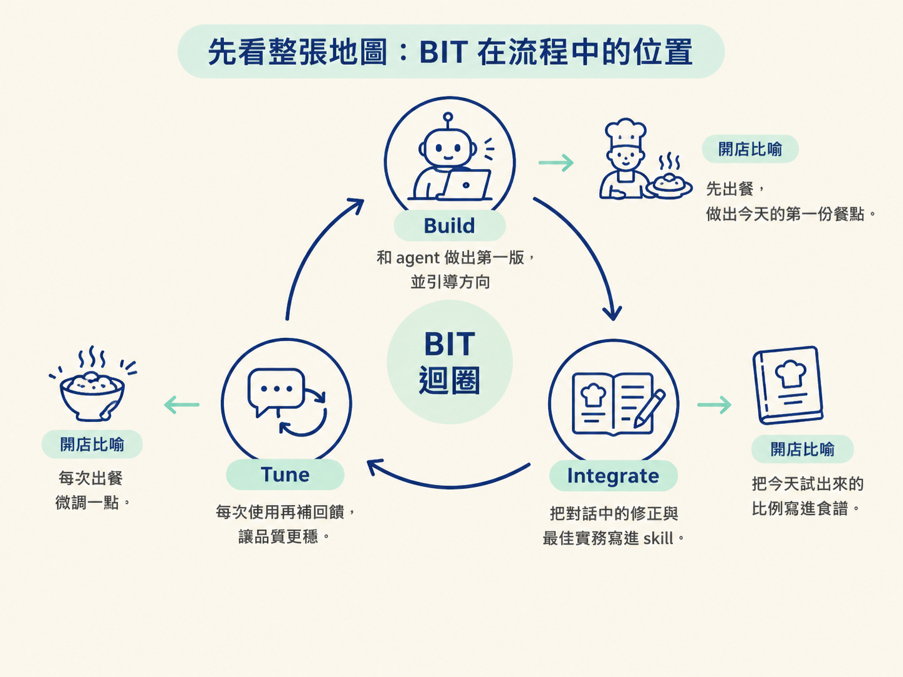
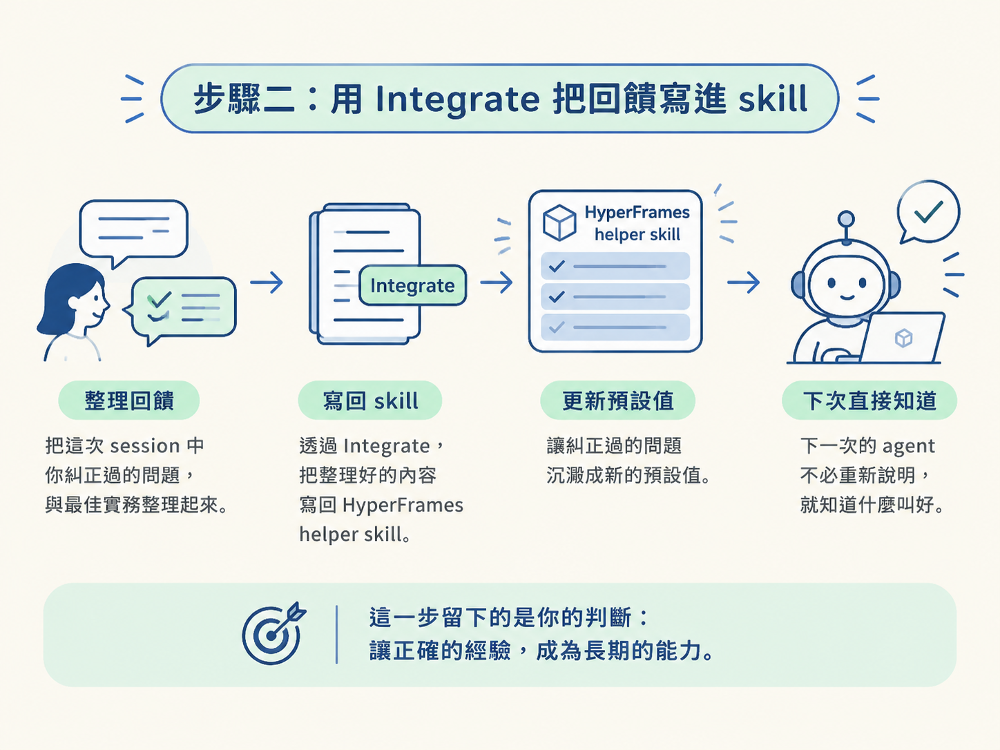
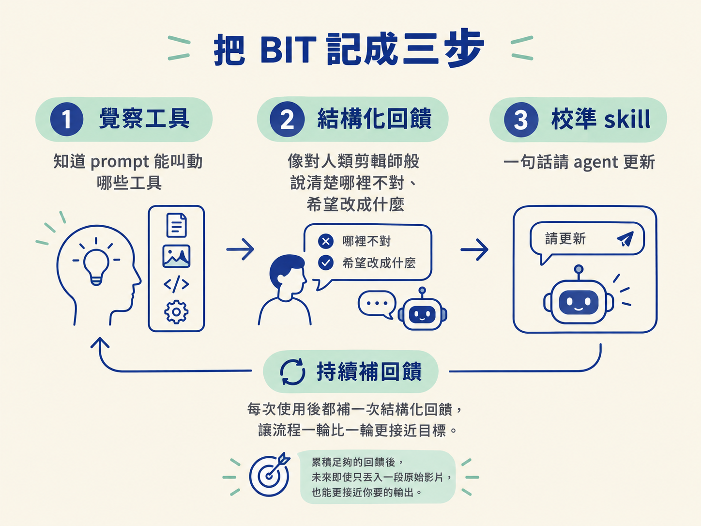

做完這一節，你會把一次影片製作中的成果與回饋，整理成可重複使用的 skill。之後再做同類型影片時，就可以沿著 Build → Integrate → Tune 的流程，不用每次從零開始，讓輸出品質一輪一輪提升。
開始前，你需要先有一個能產出影片的流程，也需要實際看過一次輸出，才能知道哪些地方需要保留、哪些地方需要修正。這一節除了做出一支影片，還要把「這次怎麼做得更好」留下來。
前面三節處理的是「怎麼把這一支影片做好」：先用 one-shot 做出初版，再透過分鏡與執導逐步修正。BIT 迴圈則處理下一個問題：這次調好的方法，怎麼變成下一次可以直接使用的起點？
BIT 的三個階段如下：
你可以把它想成開一間店：Build 是先把今天的第一份餐點做出來；Integrate 是把今天試出來的比例寫進食譜；Tune 則是每次出餐都微調一點。少了後兩步，你每天都只能憑感覺重做，好味道也很難留下來。

Build 不一定要從空白畫布開始。最快的做法之一，是提供 HyperFrames 一個網站網址，再指定你想要的影片長度。它會抓取網站上的文字、圖片與螢幕截圖，整理出品牌和設計配色，再把素材組成一支影片。
也就是說，你可以用一行指令先得到一支 10 秒的初版：「用 HyperFrames 的 website to video，把這個變成一支 10 秒的影片。」這個階段不求一次做到完美，先讓畫面跑起來，取得一個能檢查、能討論的成果。
請把這個版本當成草稿，而不是成品。one-shot 常會留下版面問題，例如文字被擠壓、字級不合適，或原本應該置中的元素沒有置中。看到這些問題後，才進入分鏡與執導的修正階段。
第一版完成、你也給過一輪回饋後，最重要的動作是把這次學到的東西留下來。不要讓修正只停留在目前這個對話裡；可以直接請 agent 根據你的回饋與這次整理出的最佳實務，更新 HyperFrames helper skill：
I want to capture all of the learnings in this session and
update the HyperFrames helper skill based on my feedback to you and all the best practices that you captured based on our conversation.這段指令的重點有兩個。第一，是把整個 session 裡的學習內容收集起來；第二，是把你實際給過的回饋，以及對話中整理出的最佳實務，寫回指定的 skill。
如果你經常做這件事，可以再包一層，建立專門的 Calibrate skill。之後只要一句話，就能請 agent 分析目前的 skill，回傳一份條列式建議，例如針對這個 skill 提出的六點校準方向。你可以先閱讀後再決定是否套用，也可以直接讓它套用。
這一步留下的是你的判斷：這次對話裡你糾正過的問題，下一次就不必再從頭說明，而會成為新的預設值。

skill 更新完成，不代表迴圈就停止了。之後每次執行同一條流程、製作同一類型的影片時，都繼續觀察輸出並給回饋。
Tune 不需要每次都重寫 skill，只要在使用過程中，順手補上新的心得。若某個版面、節奏或處理方式仍不理想，就把具體問題告訴 agent；下一輪再檢查它是否改善。這些小幅修正累積起來，流程就會逐漸靠近你要的品質。
如果要把這個迴圈講給別人聽，也可以用三步來記：
| 三步 | 你要做的事 | 對應 BIT 的哪一段 |
|---|---|---|
| 1. 覺察工具 | 不必先弄懂底層如何運作，只要知道 prompt 可以叫動哪些工具，例如轉錄用哪個、算圖用哪個，就能先做出一個未經打磨的 skill。 | Build 的起點 |
| 2. 結構化回饋 | 看過 agent 的輸出後，把回饋說得像是在和一位人類剪輯師溝通：指出哪裡不對、希望改成什麼，以及改動的方向。這是整個流程裡最重要的一步。 | Tune 的核心 |
| 3. 校準 skill | 用一句話請 agent 更新 skill，把剛剛討論過的回饋吸收進去。 | Integrate |
校準時不需要複雜指令，可以直接這樣說：
calibrate my /animate skill with this feedback that we just talked about in the sessionagent 會整理並更新 skill。下一次使用同一個 skill 時，它就能比前一次更貼近你的要求。
不過，不要把第三步當成終點。如果這個 skill 對你或你的工作很重要，就在每次使用後都補一次結構化回饋。累積足夠多的回饋後，未來即使只丟入一段原始影片，也能更接近你要的輸出。

三層駕馭解決的是「怎麼把這一支做好」；BIT 迴圈解決的是「怎麼讓下一支更省力」。Build 先做出第一版並引導方向，Integrate 把這次的引導整理成 skill，Tune 則在每次使用時持續微調。換成三步來記，就是覺察工具、結構化回饋、校準 skill；其中最有價值的，是把回饋說清楚。
做到這裡，你已經有三種影片駕馭層級，也有一個能讓流程逐漸成熟的迴圈。下次再遇到同類型任務時，你可以沿用已經校準過的 skill，不必從空白開始，再從新的回饋繼續往上調整。